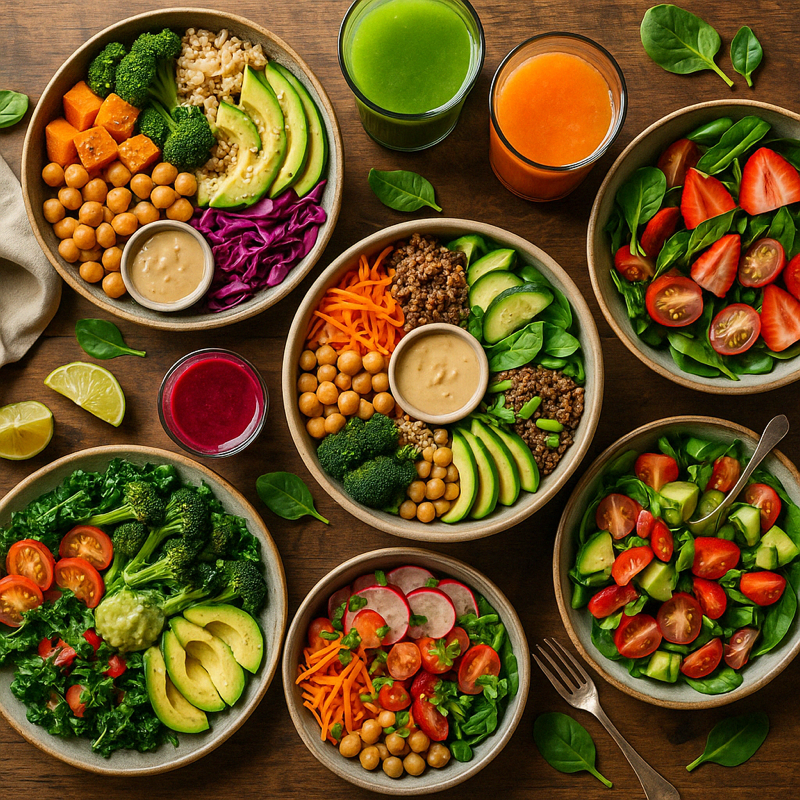
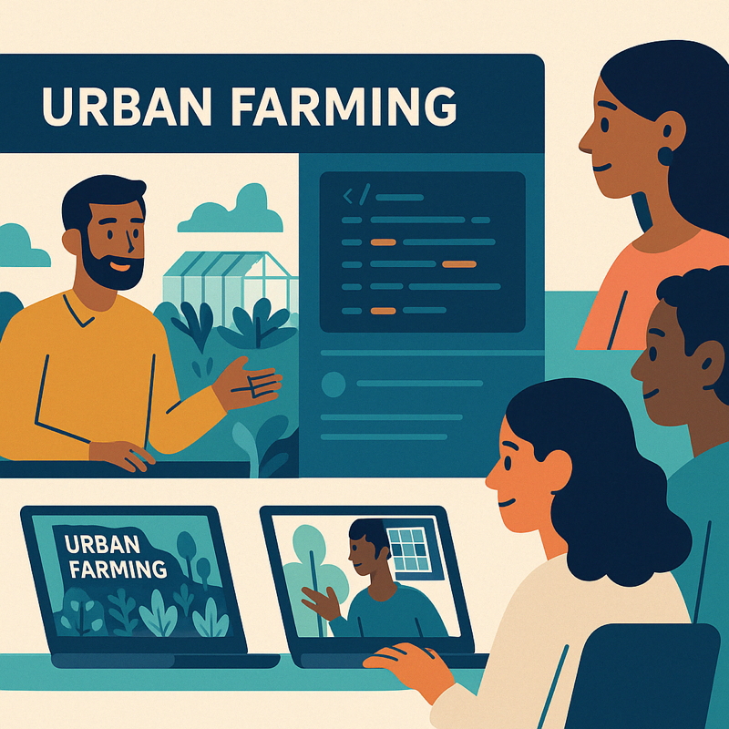

Eat & Drink
Experience the fresh flavors of sustainable urban farming
Farm to Table Excellence
At RawFuelFoods, we believe in the power of fresh, locally-sourced ingredients to create extraordinary culinary experiences. Our farm-to-table approach ensures that every dish we serve captures the essence of sustainable urban farming while delivering exceptional taste and nutritional value. We carefully select and harvest produce from our urban farms daily, guaranteeing that you receive the freshest, most flavorful ingredients in every meal.
Our commitment to sustainability extends beyond our farming practices to our kitchen, where we utilize innovative cooking techniques that preserve the natural flavors and nutritional benefits of our ingredients. Every dish is thoughtfully crafted to showcase the unique characteristics of our farm-fresh produce, creating a dining experience that is both delicious and environmentally conscious.
Our Menu
Our seasonal menu celebrates the abundance of our urban farms, featuring creative dishes that highlight the natural flavors of our fresh produce. Each recipe is carefully developed to maximize nutrition while delivering exceptional taste, proving that healthy eating can be both satisfying and delicious.
We take pride in offering a diverse selection of plant-based options that cater to various dietary preferences and restrictions. Our chefs work closely with our urban farmers to ensure that each ingredient is harvested at its peak, allowing us to create dishes that showcase the best of each season.
Catering Services
Bring the fresh flavors of RawFuelFoods to your next event with our professional catering services. We offer customizable menus that feature our farm-fresh ingredients and can accommodate various dietary preferences and event sizes. Our experienced team works closely with clients to create memorable dining experiences that reflect our commitment to sustainability and exceptional taste.
Whether you're planning a corporate lunch, private dinner party, or special celebration, our catering team will ensure that your event is complemented by delicious, nutritious, and beautifully presented dishes that showcase the best of our urban farms. Contact us to learn more about our catering options and to start planning your next event.
